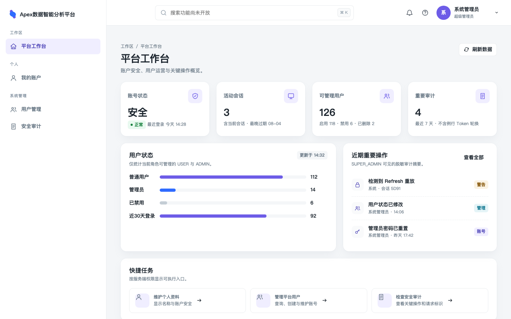
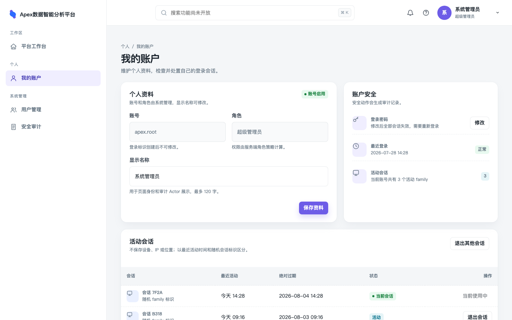
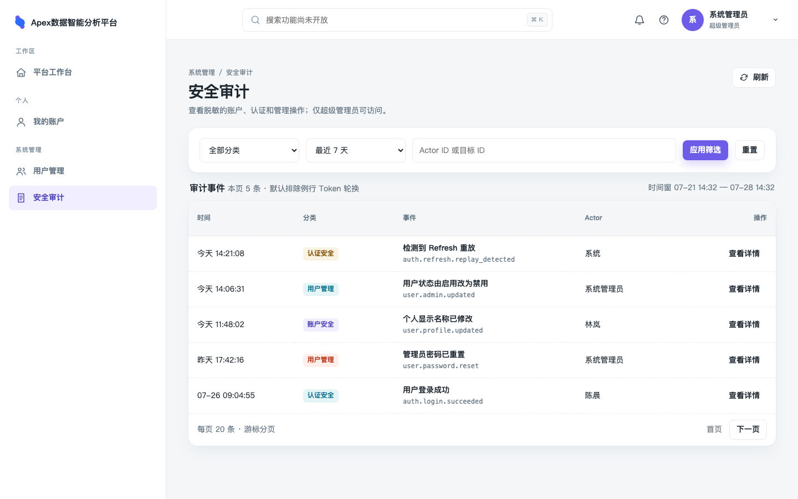
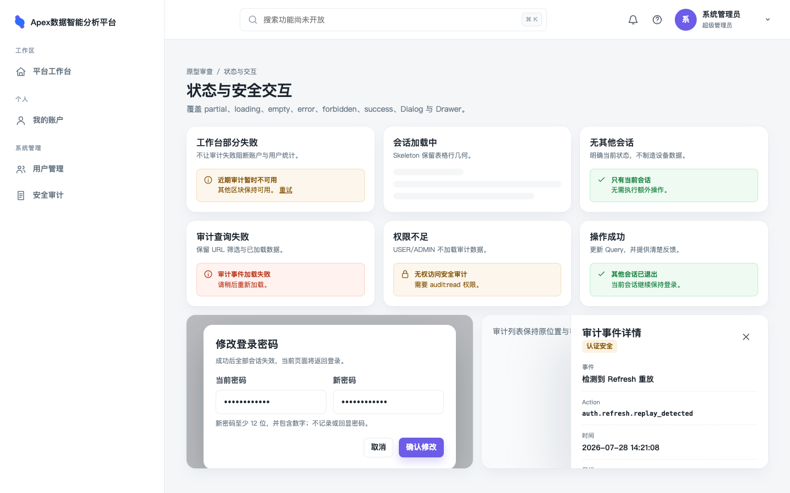

本人能力无 UI，审计不可见，登录首页仍是占位。
业务理解与页面分类
所有登录用户与超级管理员
所有角色从头部账号菜单或侧栏进入个人中心。SUPER_ADMIN 从“系统管理”进入安全审计。 登录后默认进入平台工作台。
账户是否安全，平台需要处理什么
个人中心回答“资料、密码和会话是否需要处理”；审计回答“发生了什么关键操作”； 工作台回答“当前权限范围内有哪些待关注状态”。
动作闭环，局部可恢复
资料与会话操作立即刷新权威 Query；改密返回登录页；审计筛选可重访。 一个管理区块失败不能让身份和其他区块消失。
| 页面 | 分类 | 首要任务与信息顺序 | 权限与敏感性 |
|---|---|---|---|
/account |
新页面 | 资料表单 → 账户安全摘要 → 活动会话 → 安全动作 | 所有登录用户；只显示本人；密码只在 Dialog 内存 |
/security/audit |
新页面 | 时间/分类筛选 → 事件表格 → Drawer 脱敏详情 | SUPER_ADMIN + audit:read；ADMIN/USER 不发请求 |
/ |
重大新信息架构 | 账户/会话/可管理用户/重要审计 → 状态分布 → 快捷任务 | 按 permission 渐进展示；不显示个人资产或虚构行情 |
高保真原型与视觉门禁
prototype.html 是可编辑离线源，复用仓库白色 AppShell、 300px sidebar、72px appbar、4/8px spacing、8px control radius、16px Card/Dialog 和紫晶主色。 查询参数只切换静态视图：
{kind=link}

平台工作台 SUPER_ADMIN 最大权限视图；四个概览指标、可管理用户状态、重要审计和快捷任务。{kind=link}

我的账户 资料表单、账户安全摘要和本人活动 Session family；明确不展示 IP、设备或位置。{kind=link}

安全审计 7 天默认范围、分类/Actor/目标筛选、脱敏摘要、稳定 action 和 cursor 分页。{kind=link}

状态与安全交互 partial/loading/empty/error/403/success，以及改密 Dialog 与审计详情 Drawer。路由、导航与组件边界
/
Protected index。所有角色可访问；使用现有 CurrentUser，按 permissions
启用 Sessions、User statistics、Audit queries。未来真实“今日市场”
上线时置于本页首屏，本方案工作台区块下移复用。
/account
Protected self-service。侧栏“个人”分组和头部 账号菜单均可进入。
?dialog=change-password
与 ?dialog=revoke-session&familyId=… 支持浏览器返回关闭聚焦任务。
/security/audit
Protected +
audit:read。category、range、actorId、targetId、includeRoutine、cursor 写入 URL；
eventId 打开详情 Drawer。
403 / error
壳层内失败边界。路由 loader 在加载 chunk 与发起 Query 前检查权限；403
不渲染或预取审计数据。领域 Query 失败使用 Card 内 retry。
src/views/
├── WorkspaceView/
│ ├── WorkspaceView.tsx
│ ├── components/
│ │ ├── AccountStatusCard.tsx
│ │ ├── UserStatisticsCard.tsx
│ │ ├── RecentAuditEventsCard.tsx
│ │ └── WorkspaceQuickActions.tsx
│ ├── hooks/useWorkspace.ts
│ └── test/
├── AccountView/
│ ├── AccountView.tsx
│ ├── components/
│ │ ├── ProfileForm.tsx
│ │ ├── AccountSecurityCard.tsx
│ │ ├── SessionFamilyTable.tsx
│ │ ├── ChangePasswordDialog.tsx
│ │ └── RevokeSessionDialog.tsx
│ ├── hooks/useAccount.ts
│ └── test/
└── AuditEventsView/
├── AuditEventsView.tsx
├── components/
│ ├── AuditFilters.tsx
│ ├── AuditEventTable.tsx
│ └── AuditEventDrawer.tsx
├── hooks/useAuditEvents.ts
├── utils/audit-event-url.ts
└── test/
src/api/
├── account-security.ts
├── audit-events.ts
└── users.ts # 增加 statistics；不新建 workspace API
只组合信息顺序与状态分支
路由页不直接调用 API，不持有表单副作用。Query、mutation、URL 和冲突恢复进入页面 Hook； action/category 显示映射为纯函数并有测试。
先保持页面私有
状态 Card、审计表格、Session 表格具有不同业务契约，先放页面目录。只有确认跨两个页面复用的 PageHeading 或反馈模式才提升为共享组件，不用 barrel。
NavigationItem 接受完整 Permission
现有 requiredPermission 从单一 users:read 字面量扩为
Permission；审计入口要求
audit:read，我的账户不需要额外入口权限。
状态所有权、Query 与契约消费
| 状态 | Owner / key | 刷新、失效与错误 | 页面 |
|---|---|---|---|
| 当前身份 | 现有 ["auth","me"] + AuthSession memory token |
401 single-flight refresh；403 保持身份 | 全部 |
| 资料 + ETag | ["account","profile"]，响应包含 user/etag |
保存成功同步 auth/me；412 保留草稿并要求 reload | Account |
| Session families | ["auth","session-families", filters] |
staleTime 30s；撤销后 invalidate；当前 family 撤销后清会话 | Account / Workspace |
| 用户统计 | ["users","statistics"] |
staleTime 60s；用户写 mutation 成功后 invalidate | Workspace |
| 审计列表 | ["audit-events","list", canonicalFilters]；filters 在 URL |
staleTime 15s；keep previous；失败保留表格和 URL | Audit / Workspace recent |
| 审计详情 | ["audit-events","detail", eventId] |
Drawer 打开才 enabled；关闭恢复触发按钮焦点 | Audit |
| Dialog/Drawer | URL 表达选中任务；字段、提交态留组件内存 | 成功后清 URL；密码永不进入 Query、URL、storage 或日志 | Account / Audit |
个人资料并发
Account client 使用 requestJsonWithMetadata 读取 ETag。
保存携带 If-Match；412 时不自动覆盖，显示“资料已变化”，用户 reload
后再确认提交。
工作台权限组合
所有角色请求 Session summary；拥有 users:read 才请求统计；拥有
audit:read 才请求近期审计。没有 permission 时不创建 Query observer。
Contract 状态
Contract 0017 已实施并接入真实运行时。生产页面使用严格 Zod 响应校验；fixture/MSW 仅用于测试状态，不得覆盖或猜测额外字段。Contract 0002 的 Permission enum 与 Web 权限类型已同步扩展。
核心业务流程
打开 /account → profile Query 取得 User + ETag → 修改显示名称 → POST /users/me/update + If-Match → 成功：同步 account/profile 与 auth/me → 412：保留草稿，reload 后再提交 修改密码 Dialog → POST /users/me/password → 成功：服务端撤销全部 Session → Web 清 token/query → /login?reason=password-changed
退出其他会话 → 明确保留当前 family → POST /auth/sessions/revoke-others → invalidate sessions/workspace → live region 报告撤销数量 打开审计详情 → URL 写 eventId → detail Query enabled → Drawer 显示 allowlisted details → Esc/关闭移除 eventId 并恢复表格行焦点
桌面状态、无障碍与性能
| 主题 | 设计 | 验证 |
|---|---|---|
| Loading | 资料、指标、Session 行、统计条和审计表分别使用接近最终几何的 Skeleton | 慢网 E2E，无权限数据闪现 |
| Empty / partial | 只有当前会话、无审计结果给下一动作；工作台单 Card 失败不替换整页 | Mock 每个 Query 独立失败 |
| Stale / refresh | 显示更新时间和刷新动作；背景刷新保留现有结果，不闪回 Skeleton | Query fake timer 与浏览器测试 |
| Forbidden | loader 默认拒绝；审计 chunk/Query 不加载；文案不透露事件数量 | USER、ADMIN、SUPER_ADMIN 路由矩阵 |
| 键盘与语义 | 表格 th/scope、按钮可见名称、Dialog trap、Drawer Esc/焦点恢复、live region | Playwright keyboard + axe/WCAG 2.2 AA 检查 |
| 视觉 | 1440×900 固定 PC；Card 16px、control 8px、表头 56px；状态颜色配文字/图标 | 截图回归；无页面级横向溢出 |
| 性能 | 三个路由独立 lazy chunk；无 KLineChart/ECharts；并行 Query ≤ 4；列表 payload 有界 | route-specific gzip 增量目标每页 ≤ 35 KiB，实施 PR 记录 build 基线 |
动画仅限既有 MUI 反馈；prefers-reduced-motion 下关闭非必要过渡。
本方案不设计、实现、截图或测试移动端、平板、触控、窄屏和响应式重排。
实施、发布、回滚与验收
- 阶段 0｜评审：ADR-0019、API 0004、Contract 0017 和原型已完成并标记 Implemented；审计在线保留 90 天、不归档，索引使用百万行发布门禁。
- 阶段 1｜前端基础：Permission 类型、导航、Query option、页面 Hook、 状态测试与 E2E 已完成。
- 阶段 2｜个人中心：Contract 0002 资料/改密与 Contract 0017 Session 区块均已接入真实 API。
- 阶段 3｜管理能力：用户统计和审计已接入；SUPER_ADMIN 权限、脱敏和 ADMIN 禁止访问已完成联调验证。
- 阶段 4｜工作台：首页占位已替换；role/permission 区块、partial 状态和真实数据组合已完成。
API 先就绪，Web 后启用
Contract 0017 runtime 与权限已部署；真实导航按 permission 展示，审计入口和路由只对 SUPER_ADMIN 开放。
隐藏入口并回滚 Web
关闭 feature flag，恢复首页占位和旧账号菜单；API additive 路由可继续存在。 已撤销 Session、资料/密码修改和审计事件不反转。
审计运维口径
在线保留 90 天且不归档；每日独立分批清理。少于 100 万行走普通 Prisma migration， 达到时阻断并改走受控并发建索引。页面已接入真实 API。
验收清单
- 所有角色可查看/修改本人显示名称，账号与角色只读。
- 资料保存携带 ETag；412 保留草稿，不静默覆盖。
- 改密成功清全部本地敏感状态并返回登录页。
- Session 只显示 family 标识、活动和过期时间，不显示 IP/UA/设备/位置。
- 单个/全部其他会话确认范围清楚；当前 Session 不被误撤销。
- USER/ADMIN 不加载审计 chunk、Query 或受限数据。
- 审计 URL 筛选、cursor、Drawer 可重访和返回。
- 原始 metadata、密码、token、Cookie 不进入 UI、日志或埋点。
- 工作台按 permission 组合，任一管理 Query 失败只影响对应 Card。
- 三个路由动态加载，不引入图表引擎。
- 1440×900 无页面级横向溢出，键盘、焦点、ARIA、对比度和 reduced-motion 通过。
实现验收命令
cd service-web vp install --frozen-lockfile vp check vp test vp build vp run e2e cd .. docker build --tag quant-v2/service-web:local service-web docker run --rm -p 15173:8080 quant-v2/service-web:local curl --fail http://127.0.0.1:15173/healthz
实现验证
- prototype.html 离线加载，四个视图均由固定 URL 切换。
- 四张 1440×900 Chromium 截图已生成并逐张目检。
- 生产页使用仓库 tokens 和现有 AppShell/Page/Table/Dialog/Drawer 模式。
- vp check、34 项单元测试、生产 build、8 项 E2E 与容器健康检查通过。
- 真实 API 下完成资料保存、会话、统计、审计筛选/详情和 1440×900 视觉验收。
后续触发项
- 实施 PR 的真实 route-specific gzip 基线。
- 未来真实“今日市场”上线时，工作台区块的最终下移顺序。